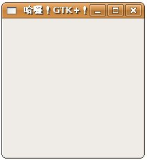

不可免俗的，從最簡單的基本視窗產生開始介紹，視窗標題就叫作「哈囉！GTK+！」好了，請使用任一編輯器來編輯一個helloGtk.c的檔案，內容如下：
#include <gtk/gtk.h> 首先include必要的GTK標頭檔案，接著先看到gtk_init()，這個函式會先初始化函式庫，設定預設信號處理，並讓GTK有機會處理傳遞給程式的命令列引數，GTK會檢查是否有以下的引數並處理：
這些引數會從引數列中移除，剩下的部份留待您自己的程式邏輯來處理。 GTK雖然使用C來撰寫，但是透過GObject函式庫，可以支援物件導向的物件封裝、繼承觀念，透過巨集還可以支援多型的觀念（至少概念上達到一些部份），一個GTK物件階層如下所示： GObject +--GInitiallyUnowned +-- GtkObject +-- GtkWidget +-- GtkContainer +-- GtkBin +-- GtkWindow gtk_window_new()會建立一個GtkWindow，這是一個基本的視窗物件，GtkWindow繼承自GtkBin，GtkBin繼承自 GtkContainer，GtkContainer可以容納其它widget，所以在GtkWindow中可以置放其它的widget，而它們全都是 GtkWidget的後代。 在函式庫的組織上，GTK+的參考手冊 中，若要查詢與GtkWindow設定的相關函式，也就是gtk_window開頭的函式名稱，則直接查詢 GtkWindow 的說明文件。 在範例中，您使用gtk_window_new()在記憶體中產生一個GtkWindow（但還不是真正出現在螢幕畫面中），參數設定為GtkWindowType，有兩個可用的設定：
若要設定GtkWindow標題文字，則使用gtk_window_set_title()，GTK_WINDOW巨集用以將window物件轉型為GtkWindow型態。 gtk_window_new()只是在記憶體中產生一個GtkWindow，若要真正在螢幕畫面中顯示GTK的widget，則使用 gtk_widget_show()，最後呼叫gtk_main()，這會將程式的控制權交給GTK，由GTK來等待鍵盤、按鈕等事件或是檔案IO通知。 您可以使用以下的指令來進行編譯與執行：
pkg-config會先取得GTK的標頭檔位置與函式庫資訊，然後再供給gcc進行編譯，一個程式的執行畫面如下所示，這個程式的原始碼使用UTF8編碼，在編譯執行之後，可直接顯示中文：  由於gtk_main()會將控制權交給了GTK，直到呼叫gtk_main_quit()之前都不會返回，這個範例目前還沒有實作這個部份（之後還會介紹如何實作），因此這個視窗您按下右上 X 鈕也不會真正關閉，而必須在文字模式下先使用Ctrl+C強制中斷程式。 有關gtk_main()、gtk_main_quit()等函式的說明，可以參考GTK+參考文件中的 Main loop and Events。 |